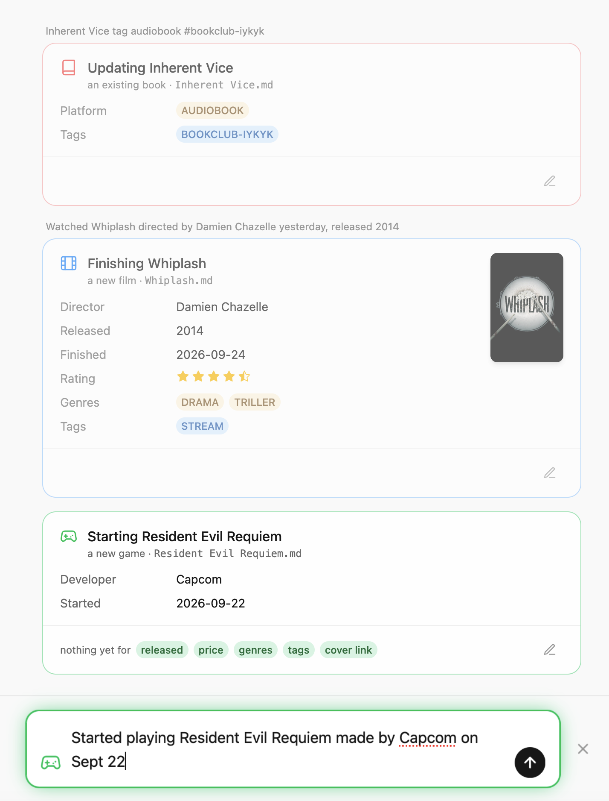
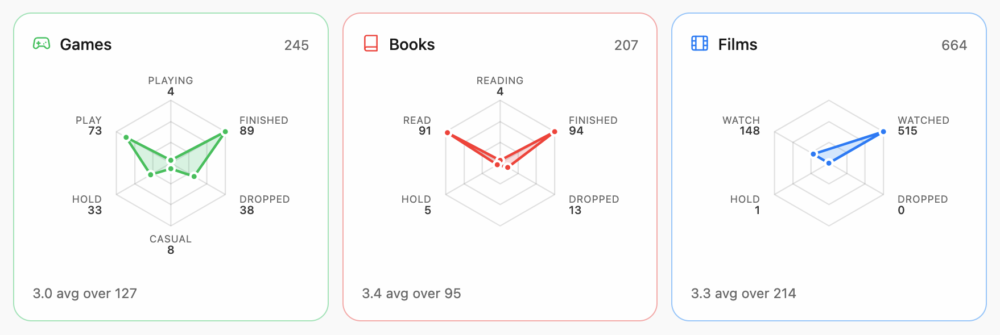

butler
Tell it what is played, read or watched. It files the rest.
A personal catalogue for games, books and film as markdown files, maintained via ordinary sentences.
Just say it
No forms, no fields, and no properties tables. Write the sentence and let the butler figure out what it meant.
Live preview
Shows a live preview of the result as the sentence(s) is typed.
Shortcuts
# for a tag, ! for a genre, @ for the shelf.
Loose files
Every entry is a plain Markdown file that can be opened, edited or taken somewhere else. Nothing is locked in a database.
Works perfectly with Obsidian's Bases, Graph View, and more.
Importing data
Easily imports all data from a GoodReads or Letterboxd export including ratings, dates, reviews and all.


The shape of the library
All the cataloged Games, Books and Films at a glace.